Biomedical Databases Notes
1 Introduction
Information flow
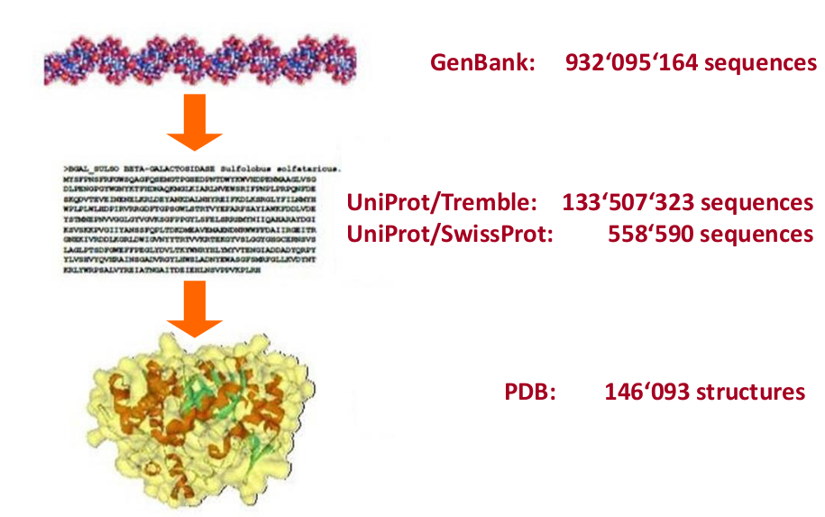
Type of data :
- Primary data (experimental results):
- Genomes
- Protein Sequences
- Protein Structures Interactions
- Secondary data (derived info)
- Protein folds
- Protein families
- Genome comparisations
Annotation/Curation :
- Raw Data : Protein sequence only
- Annotated Data : Protein sequence with function, localization, expression info, links etc. The annotation can be : Manual or Automatic
Common problems :
- Quality check : if error enter a database they tend to propagate into other databases they are difficult to estirpate.
- Lack of standardization : lack of schema and lack of common nomenclature
- Integration : is important to integrate more databases. By fusion(uniprot) or by links.
Main Bioinformatics databases
- Uniprot: A comprehensive resource for protein sequence and functional annotation.
- Ensembl: Genome browser, API and database, providing access to reference genome annotation
- PDBe: The European resource for the collection, organisation and dissemination of 3D structural data (from PDB).
- InterPro : A databse for the classification of proteins into families, domains and conserved sites.
1.1 Database introduction
A database is a large structured set of persistent data, usually in computer-readable form
Database terminology
- Table : A collection of closely related columns. A table consists of rows each of which shares the same columns but vary in the column values.
- Record : A record is a collection of fields, possibly of different data types, typically in a fixed number and sequence
- Key : A Key is a data item that exclusively identifies a record. In other words, key is a set of column(s) that is used to uniquely identify the record in a table
- Field : A database field is a single piece of information from a record.
DBMS
DBMS software primarily functions as an interface between the end user and the
database, simultaneously managing the data, the database engine, and the
database schema in order to facilitate the organization and manipulation of data
Allows the user to:
- Access data
- Manipulate data
- Preserve the integrity
- Deal with security
DBMS Models:
- Flat file
- Hierical Models
- Relational Model
- Object-Oriented Model
1.2 Relational Model
- Schema : logical structure of the data. Intensional part
- Instance : is the set of actual data. Extensional part
How to store a Schema
- Flat file – simple and available to all
- XML – eXtensible Markup Language (Markups instruct the software displaying the text)
- ASN.1 – Abstract Syntax Notation One (NCBI uses ASN.1 for data storage and retrieval)
2 Pubmed
The National Center for Biotechnology Information (NCBI)(www.ncbi.nlm.nih.gov_) Created in 1988 as a part of the National Library of Medicine (NLM) at the National Institute of Health (NIH).
PubMed sections
- PubMed free Medline
- PubMed Central : full text online access
- MeSH database (Medial Subject Headings) : controlled vocabulary thesaurus
Why databases search is important?
- The scientific literature increases by 2000 pages every minute.
- It would take 5 years to read the new scientific literature produced in 1 day.
\(\rightarrow\) Search engines play an essential role for picking out the right articles
2.1 Quering
How to search?
- by Author : name and initials with [’author’] tag (e.g. ’lesk am’)
- by Subject : put the keyboard in search field (’e.g. ’evolution’)
- by Journal : put the name of the journal with [’journal’] tag
PubMed uses Automatic Term Mapping : for any terms entered without a qualifier are looked up against the following translation tables and indexes in a distinct order
- MeSH Translation Table (terms like diseases, phenomena etc.)
- Journal Translation Table
- Author Index
It performs a translation and build the database query automatically
Example Search: lesk am evolution
lesk am[Author] AND ("biological evolution"[MeSH Terms] OR ("biological"[All Fields]
AND "evolution"[All Fields]) OR "biological evolution"[All Fields] OR "evolution"[All Fields]
OR "evolution s"[All Fields] OR "evolutional"[All Fields] OR "evolutions"[All Fields]
OR "evolutive"[All Fields] OR "evolutivity"[All Fields])
For any database we usually have table that list all the possible search fields
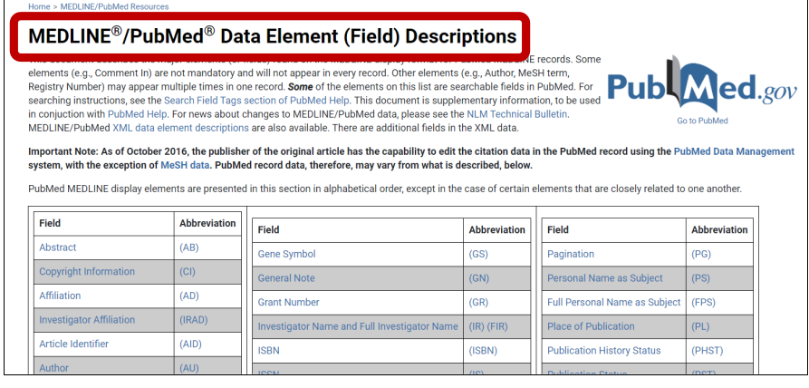
2.1.1 MeSH
MeSH vocabulary is divided into four types of terms. The main ones are the “headings” (also known as MeSH headings or descriptors[2]), which describe the subject of each article (e.g., “Body Weight”, “Brain Edema” or “Critical Care Nursing”).
- Search MeSH db with a keyword
- click on the MeSH term, look at “Related information“ and search in Pubmed
- for restricting use “Major Topics”
In addition to the descriptor hierarchy, MeSH contains a small number of standard qualifiers (also known as subheadings), which can be added to descriptors to narrow down the topic. For example, “Measles” is a descriptor and “epidemiology” is a qualifier; “Measles/epidemiology” describes the subheading of epidemiological articles about Measles. The “epidemiology” qualifier can be added to all other disease descriptors. Not all descriptor/qualifier combinations are allowed since some of them may be meaningless. In all there are 83 different qualifiers.
2.1.2 Api access
Entrez Direct (EDirect) provides access to the NCBI’s suite of interconnected databases (pubblications, sequences, structues, genes, variations, expressions, etc.) from a UNIX terminal windows.
Entrez Dirext Functions
- esearch : performs a new Entrex search using terms in indexed fields
- efetch : downloads records or reports in a designated format
- xtract : converts EDirect XML output into a table of data values
- epost : uploads unique indentifiers (UIDs) or sequence accession numbers
2.2 Exercises
2.2.1 Exercise 1
- Question : Within PubMed, search for articles which contain as “Text Word” “circadian rhythms” and either “cortisol” or “melatonin”. Limit your search to articles which contain “humans” as a MeSH term, and exclude all Review articles. How many entries have you found?
- Answer
953 entries are present for this query.
The query used is the following
"circadian rhythms "[Text Word] AND (melatonin[Text Word] OR cortisol[Text Word]) AND "Humans"[MeSH Terms] NOT "review"[Publication Type]
2.2.2 Exercise 2
- Question : Find all articles with first or last author “Smith”, which have been “nih funded” (hint: check in “Filter”), whose major topics is “Alzheimer disease”, dealing in particular with the diagnosis of such disease. How many articles have you found ?
- Answer
((Smith[Author - Last] OR Smith[Author - First]) AND "nih funded"[Filter] AND "Alzheimer disease/Diagnosis"[MeSH Major Topic])
3 UniProt
UniProt is a freely accessible database of protein sequence and functional information, many entries being derived from genome sequencing projects. It contains a large amount of information about the biological function of proteins derived from the research literature
A comprehensive resource for protein sequence and functional annotation.
It is a consortium
- SIB (Swiss Institute of Bioinformatics) : /UniProtKB/(UniProt Knowledgebase) Swiss-Prot
- EBI (European Bioinformatics Institute) : UniProtKB TrEMBL and UniParc (UniProt Archive)
- PIR (Protein Information Resource) : UniRef (UniProt Reference Cluter)
UniProt Data Flow EMBL(Cds) \(\rightarrow_{\text{(Translation)(Automatic Annotation)}}\) \(\rightarrow\) TrEMBL(Protein) \(\rightarrow_{\text{(Manual Curation)}}\) Swiss-Prot(Protein)
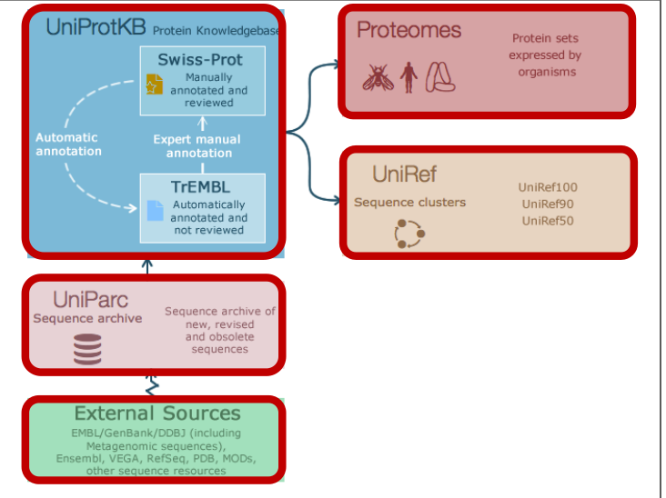
I very important understand which UniProt Release we are using.
3.1 Manual Curation* (it is a process of validation)
Manual curation consists of a critical review of experimental and predicted data for each protein as well as manual verification of each protein sequence. Curation methods applied to UniProtKB/Swiss-Prot include
- manual extraction and structuring of information from the literature
- manual verification of results from computational analyses
- mining and integration of large-scale data sets
- continuous updating as new information becomes available.
Discrepancies between sequence reports are identified, with underlying causes such as:
- alternative splicing
- natural variations
- frameshifts
- incorrect initiation sites
- incorrect exon boundaries
- unidentified conflicts
- erroneous gene prediction
Comparison with homologous sequences can be used to identify sequence errors and their causes. Each protein in Swiss-Prot should be as complete and correct as possible.
Annotations
- Biological Process
- Molecular Function : Activity or task performed
- Cellular Component : Where is the protein located
3.2 Gene ontology
An ontology is a formal representation of a body of knowledge within a given domain. Ontologies usually consist of a set of classes (or terms or concepts) with relations that operate between them.
The Gene Ontology (GO) describes our knowledge of the biological domain with respect to three aspects:
- Molecular function : Molecular-level activities performed by gene products. Molecular function terms describe activities that occur at the molecular level, such as “catalysis” or “transport”. GO molecular function terms represent activities rather than the entities (molecules or complexes) that perform the actions, and do not specify where, when, or in what context the action takes place. Molecular functions generally correspond to activities that can be performed by individual gene products (i.e. a protein or RNA).
- Cellular Component : The locations relative to cellular structures in which a gene product performs a function, either cellular compartments (e.g., mitochondrion), or stable macromolecular complexes of which they are parts (e.g., the ribosome).
- Biological Process : The larger processes, or ‘biological programs’ accomplished by multiple molecular activities. Examples of broad biological process terms are DNA repair or signal transduction. Examples of more specific terms are pyrimidine nucleobase biosynthetic process or glucose transmembrane transport.
3.2.1 GO Classes
GO classes (or GO terms) are composed of a definition, a label, a unique identifier, and several other elements.
Required fields
- Unique Identifier (ID)
- Term Human Readable name
- Aspect : which of the three ontologies does this entity belong to
- Definition: textual definition of what the terms represent
- Relationship with other terms
Optional elements
- Secondary ID
- Synonyms
- Comments
- DB cross reference
3.2.2 Go domains and graph
The three GO domains (cellular component, biological process, and molecular function) are each
represented by a separate root ontology term. All terms in a domain can trace their parentage
to a root term, although there may be numerous different paths via varying numbers of
intermediary terms to a ontology root. The three root nodes are unrelated and do not have a
common parent node, and hence GO is three ontologies.

3.2.3 Go annotations
A GO annotation is a statement about the function of a particular gene. GO annotations are created by associating a gene or gene product with a GO term.
Together, these statements comprise a “snapshot” of current biological knowledge. Hence, GO annotations capture statements about how a gene functions at the molecular level, where in the cell it functions, and what biological processes (pathways, programs) it helps to carry out.
There are four pieces of information that uniquely identify a GO annotation. Although there are additional components a curator can use to indicate more information, including qualifiers and annotation extensions, at the very minimum an annotation consists of:
- Gene product (may be a protein, RNA, etc.)
- GO term
- Reference
- Evidence
3.2.4 Go Evidence
We can have different level of evidence with the following codes
- Inferred from Experiment (EXP)
- Inferred from Direct Assay (IDA)
- Inferred from Physical Interaction (IPI)
- Inferred from Mutant Phenotype (IMP)
- Inferred from Genetic Interaction (IGI)
- Inferred from Expression Pattern (IEP)
3.3 UniProt Annotation System
Enzyme Classification (6 CLASSES)
| EC Class | Reaction Type |
| 1 | Oxidoreductases |
| 2 | Trannsferases |
| 3 | Hydrolases |
| 4 | Lyases |
| 5 | Isomerases |
| 6 | Ligases |
This is a tree like classification. It is used a 4 numbers code to annotate an enzyme.
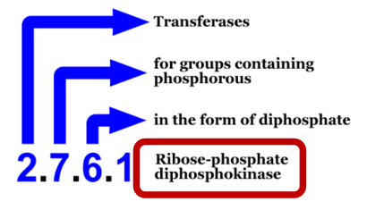
- UniProtKB/TrEMBL
- Redundant
- 1 entry for each translated ENA entry
- Computationally analyzed
- Automatically annotated
- Unreviewed
- Redundant
ARBA (Association rule based annotation) : uses rule mining techniques to generate annotation models, based on the InterPro classification.
- UniProtKB/SwissProt
- Non-Redundant
- 1 entry for each protein
- Curator analyzed
- High-quality manually annotated
- Reviewed
It is safe to assume that manual annotations are more reliable than automatic ones.
UniRule: maintains a set of manually established annotation rules.
InterPro is an effort to integrate all the main databases about protein classification.
- Non-Redundant
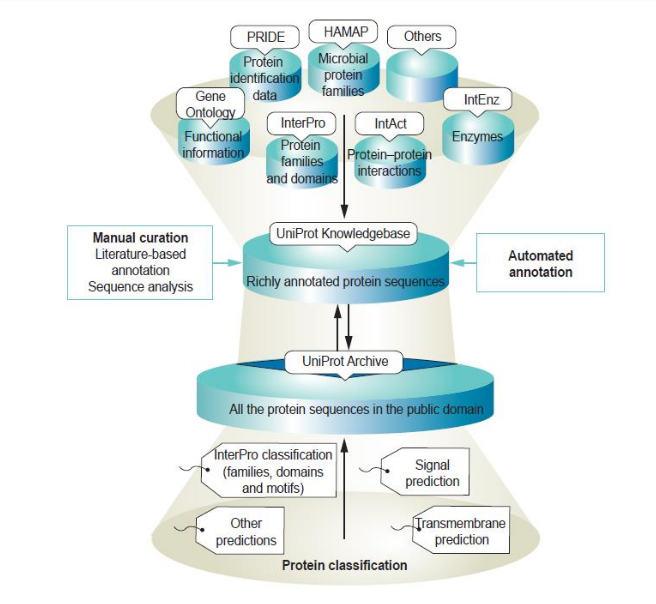
3.3.1 Evidence And Conlcusion Ontology
An evidence is described by a type (mandatory evidence type), represented by a code from the Evidence and Conclusion Onthology(ECO) and ,if available, the source of the information, which is usually a database record.
Example
- Evidence type without source{type}
{ECO: 0000305} {ECO: 000250} {ECO: 000255} - Evidence type with source {type|source}
{ECO: 0000305|Pubmed:2435555} {ECO: 000250|UniProtKB:p11497}
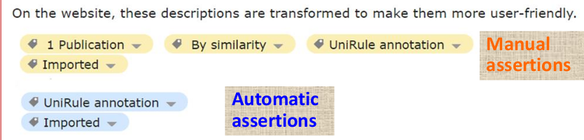
3.3.2 Annotations categories
- Function
- Names & Taxonomy
- Subcellular location
- Pathology & Biotech
- Post Translation Modifications / Processing
- Expression
- Interactions
- Structure
- Family and Domains
- Sequences
- Similar Proteins
- Cross-referenes
- Entry informations
3.3.3 Automatic Annotation
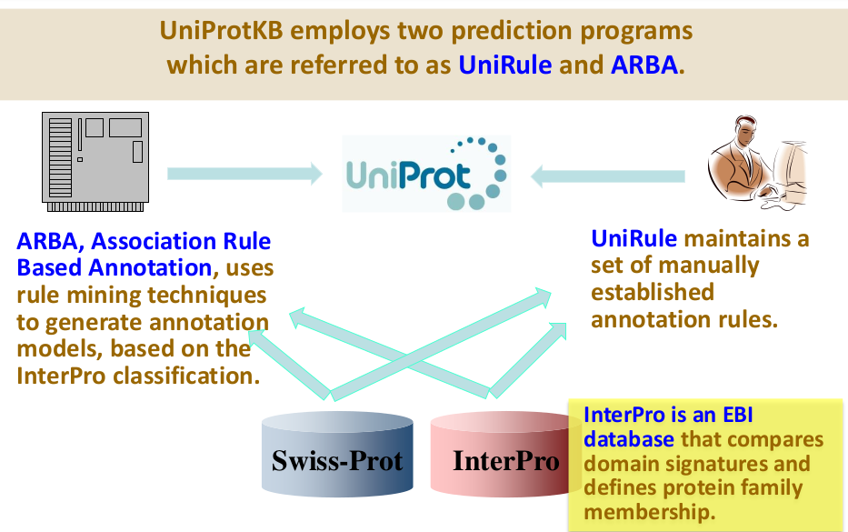
Problems
Electronic Annotation follows the principle that proteins with similar sequences
and similar structures frequently carry out similar functions.
But protein sequence or structure similarity alone does not necessarily equate to cellular or molecular functional similarity.
3.3.4 Annotation Score
The annotation score provides a heuristic measure of the annotation content of a UniProtKB entry or proteome. This score cannot be used as a measure of the accuracy of the annotation as we cannot define the ’correct annotation’ for any given protein.
The annotation score is computed in the following way:
- Different UniProtKB annotation types (e.g. protein names, gene names, functional annotations (comments) and sequence annotations (features), GO annotations, cross-references) are scored either by presence or by number of occurrences.
Annotations with experimental evidence score higher than equivalent predicted/inferred annotations, thereby favoring expert literature-based curation over automatic annotation.
- The score of an individual entry is the sum of the scores of its annotations.
- The score of a proteome is the sum of the scores of the entries that are part of the proteome.
3.4 Interpro Database
InterPro is a database of protein families, domains and functional sites in which identifiable features found in known proteins can be applied to new protein sequences in order to functionally characterise them.
The contents of InterPro consist of diagnostic signatures and the proteins that they significantly match. The signatures consist of models (simple types, such as regular expressions or more complex ones, such as Hidden Markov models) which describe protein families, domains or sites.
Models are built from the amino acid sequences of known families or domains and they are subsequently used to search unknown sequences (such as those arising from novel genome sequencing) in order to classify them.
- In InterPro, patterns, profiles, fingerprints and HMMs from a number of different databases are brought together into a single searchable resource.
3.5 Uniprot Entry
Annotations of a UniProtKB entry are structured into the following sections:
- Function
- Names & Taxonomy
- Subcellular location
- Pathology and Biotech
- PTM / Processing
- Expression
- Interaction
- Structure
- Family and Domains
- Sequence(s)
- Cross-references
- Publications
- Entry information
- Miscellaneous
- Similar Proteins
3.6 UniParc
UniProt Archive (UniParc): An archive for tracking protein sequences
- Comprehensive : contains most of the publicly available protein sequences in the world
- Non-redundant : merges identical sequence strings, each unique sequence is given a stable and unique identifier (UPI)
- Traceable : Versioned, with ‘active’ and ‘obsolete’ status tags
- Concise : no annotations
3.7 UniRef
The UniProt Reference Clusters (UniRef) provide clustered sets of sequences from the UniProt Knowledgebase (including isoforms) and selected UniParc records in order to obtain complete coverage of the sequence space at several resolutions while hiding redundant sequences (but not their descriptions) from view.
UniRef Cluters
- UniRef50 : UniRef50 is generated by clustering UniRef90 seed sequences that have at least 50% sequence identity.
- UniRef90 : UniRef90 is generated by clustering UniRef100 seed sequences that have at least 90% sequence identity.
- UniRef100 : UniRef100 contains all UniProt Knowledgebase records plus selected UniParc records (see below). It is generated by clustering identical sequences and subfragments.
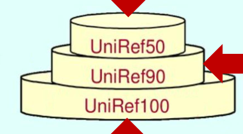
3.7.1 UniRef Seed
- A UniRef seed is the sequence that has been used as the template to recruit other sequences by the clustering algorithm. The seed sequence is the longest member of a cluster.
- However, the longest sequence is not always the most informative one. There is often more biologically relevant information (name, function, cross-references) available on other cluster members. Therefore, in addition, a representative sequence is chosen for each cluster.
3.8 Proteomes
A proteome is the set of proteins thought to be expressed by an organism. UniProt provides proteomes for species with completely sequenced genomes
- Reference Proteomes : Some proteomes have been (manually and algorithmically) selected as reference proteomes. They cover well-studied model organisms and other organisms of interest for biomedical research and phylogeny
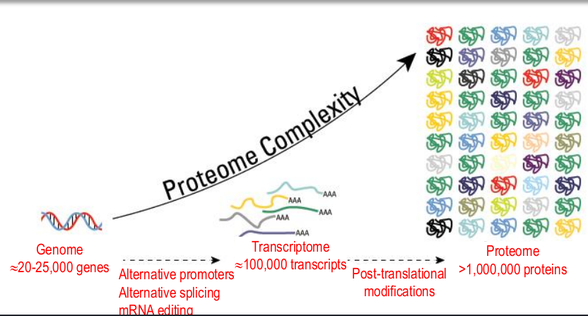
3.8.1 Human Proteome
September 2008 First draft of the complete human proteome available in UniProtKB/ Swiss-Prot. Gene prediction algorithms, plus the existing transcript and protein information, have enabled the identification of most exons in a genome.
3.9 Protein Classification
Protein Family
A protein family is a group of proteins that share a common evolutionary origin,
reflected by their related functions and similarities in sequence or structure.
Protein families are often arranged into hierarchies.
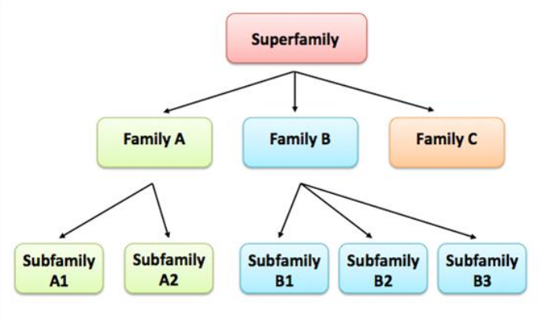
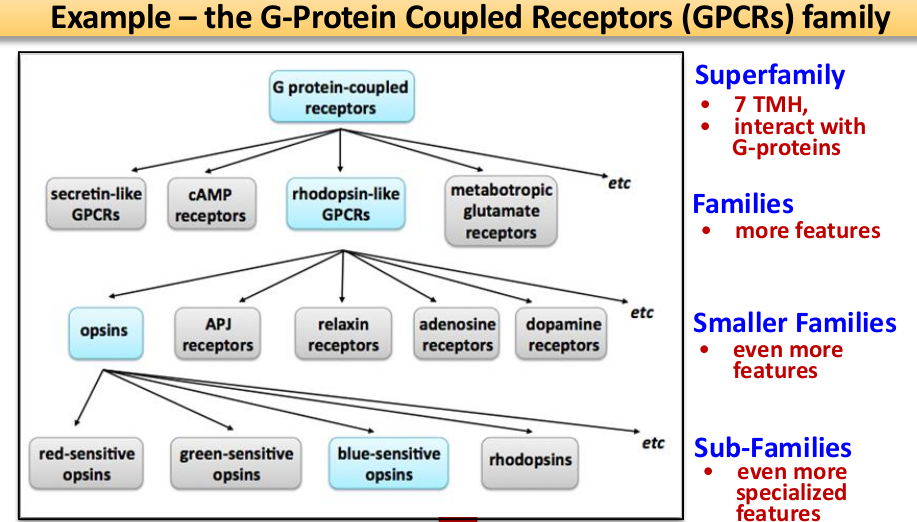
Protein Domains
A protein domain is a conserved part of a given protein sequence and tertiary structure that can evolve, function, and exist independently of the rest of the protein chain. Each domain
Domains have been described as units of:
- compact structure
- function and evolution
- folding
Each of these definition is valid and will often overlap. The identification of domains that occur within proteins can provide insights into their function.
Protein Signatures Signatures: mathematical models constructed from MSA. They are often a very sensitive way of identifying protein function.
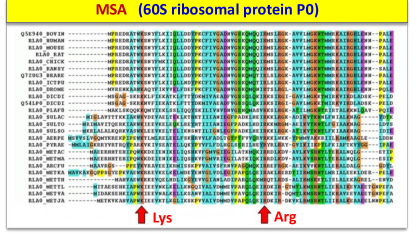
Protein Profile
3.9.1 InterPro database
In InterPro, patterns, profiles, fingerprints and HMMs from a number of different databases are brought together into a single searchable resource.
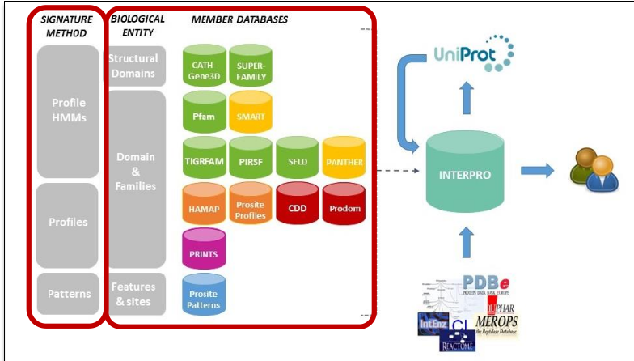
3.9.2 PFam Database
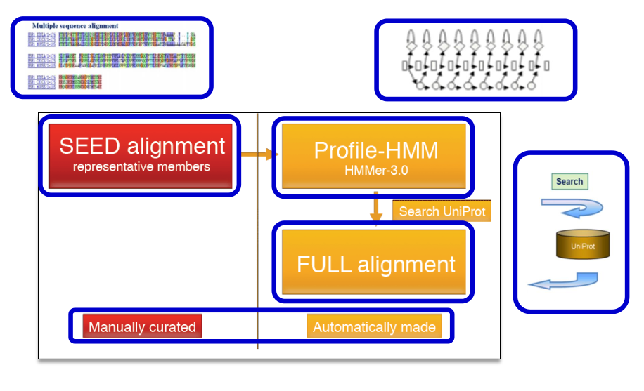
3.10 Exercises
3.10.1 Exercise 1
- Question : Write down a single query which will retrieve within UniProt all proteins, labelled as proteases in the CC function field, from human and mouse, excluding those labelled as “cysteine proteases” in the same field.
- Answer
#+BEINSRC annotation:(type:function protease) (organism:“Homo sapiens (Human) [9606]” OR organism:“Mus musculus (Mouse) [10090]”) NOT annotation:(type:function “cysteine protease”) #+ENDSRC
3.10.2 Exercise 2
- Question
Do the same as above, but using the EC codes for “proteases” and for “cysteine proteases”.
- Answer
ec:3.4.*.* NOT ec:3.4.22.* (organism:"Homo sapiens (Human) [9606]" OR organism:"Mus musculus (Mouse) [10090]")
3.10.3 Exercise 3
- Question : Which protein is involved in the human sma2 disease ? (insert UniProt code)
- Answer
annotation:(type:disease sma2) AND organism:"Homo sapiens (Human) [9606]"
3.10.4 Exercise 4
- Question
- Which natural variant reduces in the sma2 and sma3 disease the binding of such protein to RPP20/POP7? Which is the corresponding dbSNP code? (insert UniProt variant code and dbSNP code)
- On which evidence is the above piece of information based? Which is the UniProt code for the evidence type?
- Answer
Search in pathology and biotech sections
- Natural variant VAR005618 dbSNP:rs76871093
- Experimental , ECO:0000269
3.10.5 Exercise 5
- Question
- Answer
UP000005640 <- Proteome id
- 75,777 <- Proteins present
- 602 <- Uncertain proteins
existence:"Uncertain [5]" AND organism:"Homo sapiens (Human) [9606]" AND proteome:up000005640
4 ENSEMBL
Ensembl is a joint project between the European Bioinformatics Institute and the Wellcome Trust Sanger Institute, launched in 1999 in response to the imminent completion of the Human Genome Project.
- The Ensembl project team developed new software pipelines to automatically generate evidence-based annotation of genome sequences.
- The Ensembl project has expanded from the curation of the human genome to embrace more than 50 vertebrate species, and several hundreds non vertebrates species.
- Generating the annotation is just the start. Ensembl provides several means of data access, the foremost of which is a highly customisable, interactive website.
4.1 ENSEMBL Features
- The gene set
- Splice variant, proteins, noncoding RNA
- Comparative analysis
- Whole genome alignments, protein trees
- Variation and regulation
- Variants (SNPs, InDels, CNVs)
- BioMart (data export)
- Programmatic access via Perl-API, MySQL
- Data and code are open source
4.2 Human Genome
The human genome consists of three billion base pairs, which code for approximately 20,000–25,000 genes.
- However the genome alone is of little use, unless the locations and relationships of individual genes can be identified. One option is manual annotation, whereby a team of scientists tries to locate genes using experimental data from scientific journals and public databases. However this is a slow, painstaking task.
- The alternative, known as automated annotation, is to use the power of computers to do the complex pattern-matching of protein to DNA.
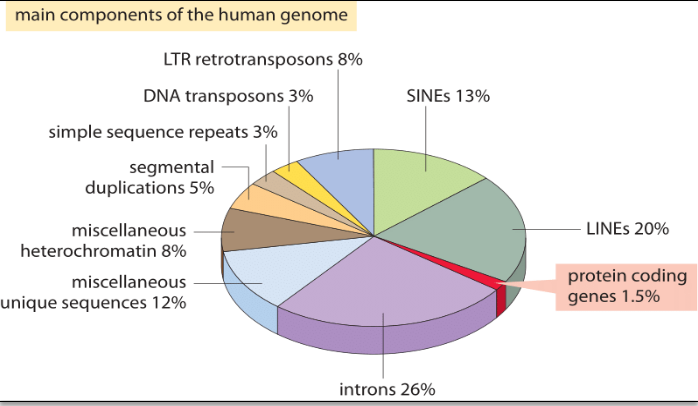
About 1.5% of the genome consists of the \(\simeq 20,000\) protein-coding sequences which are interspersed by the non coding introns ( \(\simeq 26%\) ). Transposable Elements are the largest fraction (40-50%) including for example Long Interspersed Nuclear Elements (LINEs), and Short Interspersed Nuclear Elements (SINEs). Most Transposable Elements are genomic remnants, which are currently defunct.
Transcribed Human Genome
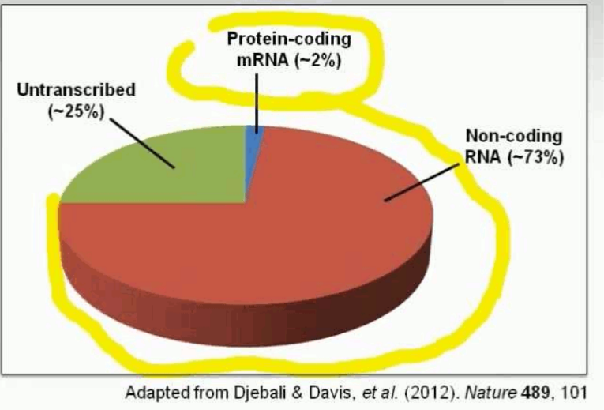
4.2.1 Gene Quantification
A comparison between the number of genes in an organism and a naïve estimate based on the genome size divided by a constant factor of 1000bp/gene.
It is found that this crude rule of thumb, which works well for many bacteria and archaea, fails for multicellular organisms.
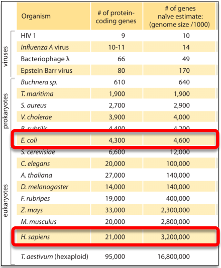
4.3 Gene Prediction
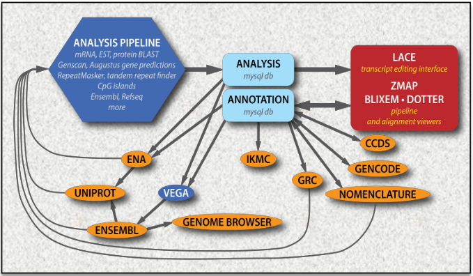
Automatic Annotation
Gene building all at once (whole genome) → «Ensembl»
- cDNA and protein alignments (from sequence DBs)
- RNAseq data
- Ab initio predictions (based on the genomic sequence, no experimental evidence)
- Gene predictions based on ESTs (ESTGenes)
Manual Annotation
Gene determination on a case-by-case by a curator →
- VEGA (VErtebrate Genome Annotation)
- Havana (Human And Vertebrate ANalysis and Annotation)
4.4 Ensembl vs Havana
| ENSEBL | Havana |
|---|---|
| Automatic Annotation | Manual Annotation |
| Many Species(n=61) | Fewer Species |
| Genome-wide at once | Gene by gene |
When Havana and Ensembl predict the same transcript, basepair for basepair, the transcripts are merged and coloured gold
- A protein is deposited into the “Consensus CDS protein set” (CCDS set) if NCBI, UCSC, Havana, Ensembl have determined the same sequence.
4.5 Glossary
4.5.1 Locating a gene
The cytogenetic location, a standardized way of describing a gene’s location on the chromosome, consists of a combination of numbers and letters and is made up of three components:
Number or letter of the chromosome (1-23, X or Y)
Arm of the chromosome (p or q)
Position of the gene on the arm (cytogenetic bands). The position is dependent on the light and dark bands that appear on the chromosome when stained and is expressed as a two-digit number (one digit represents region and one represents band). Sometimes the digits are followed by a decimal point and one or more digits. These additional digits represent the distance from the centromere (increasing numeric value indicates farther distance from centromere). “Cen”, “ter”, and “tel” are also used to describe the position of the gene on the arm.
Cen – close to the centromere Ter (terminus) – close to end of either the p or q arms Tel (telomere) – close to end of either the p or q arms
Example Gene: Anaplastic lymphoma kinase receptor Chromosomal location: 2p23 Location description: chromosome 2, p arm, position 23
4.6 Exercises
4.6.1 Exercise ENSEMBL
- Question
The LCT gene product (lactase) has lactase activity. Mutations in this gene are associated with congenital lactase deficiency. Polymorphisms in this gene are associated with lactase persistence, in which intestinal lactase activity persists at childhood levels into adulthood.- Which is the Ensembl code for this gene? How many transcripts are reported for this gene? Are they all protein coding? Are they coded on the forward or reverse strand?
- Which is the Ensembl code of the longest transcript? Which is its CCDS code ? And its Refseq codes ?
- Which are the chromosomal coordinates of this gene ? And its cytogenetic location ?
- Which is the protein sequence in the reference genome between positions 2: 135,829,587 and 2:135,829,598 ? Are there variants for these residues, which are annotated in Ensembl ? Which databases do they come from ? What are their amino acid positions, in the protein product from the LCT-201 transcript ?
- Answer
- The Ensembl code is ENSG00000115850 . This gene has 2 transcripts. LCT-201 yes, LCT-202. Reverse strand for both.
- ENST00000264162.7 . CCDS2178 . NM002299.4
- Chromosome 2: 135,787,850-135,837,184 . q21.3
- LCT-201, yes, dbSNP, 801, 817
5 PDB
It is an archive of experimentally determined 3-dimensional structures of biological macro-molecules (Protein, nucleic acids, sugars).
The PDB is a key in areas of structural biology, such as structural genomics. Most major scientific journals, and some funding agencies, now require scientists to submit their structure data to the PDB.
Content
- X-ray Crystallography (88%) : Strucure Factors data
- NMR Spectroscopy (10%) : Restrains, Chemical Shifts
- Electron Microscopy (1%) : Map in EMDB
#+CAPTION : PDB History
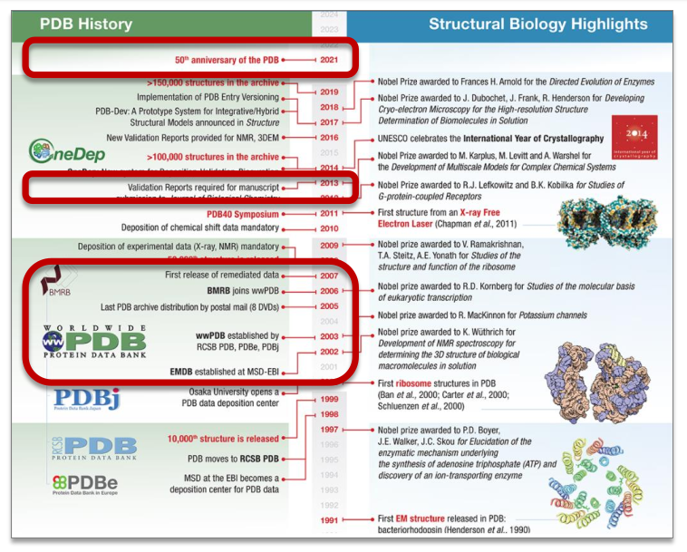
5.1 Validation
Validation side
Method-specific Validation Task Forces have been convened to
collect recommendations and develop consensus on additional validation that
should be performed, and to identify software applications to perform validation
tasks. There are tools available for the validation of X-ray Crystallography, NMR and
Electron Microscopy data.
There are many metrics used to validate the quality of a protein structure in the PDB file.
5.1.1 B-Factor (Temperature Factor)
The B-factor for each atom is given by: \(B = 8 \pi^{2} U^{2}\) where \(U^{2}\) is the mean square displacement of the atom.
Mean Square Displacement : It is the most common measure of the spatial extent of random motion, and can be thought of as measuring the portion of the system “explored” by the random walker.
Examples if B-factor = 15 A -> mean square displacement \(\simeq 0.44 A\) if B-factor = 60 A -> mean square displacement \(\simeq 0.87 A\)
5.1.2 Resolution
Resolution in X-ray crystallography: the highest resolvable peak in the diffraction pattern. If the proteins in the crystal are not perfectly aligned, but all slightly different, due to local flexibility or disorder, the diffraction pattern will not show such fine information.
High-resolution structures, with resolution values of 1 Å or so, are highly ordered and it is easy to see every atom in the electron density map.
Lower resolution structures, with resolution of 3 Å or higher, show only the basic contours of the protein chain, and the atomic structure must be inferred. Most crystallographic-defined structures of proteins fall in between these two extremes.
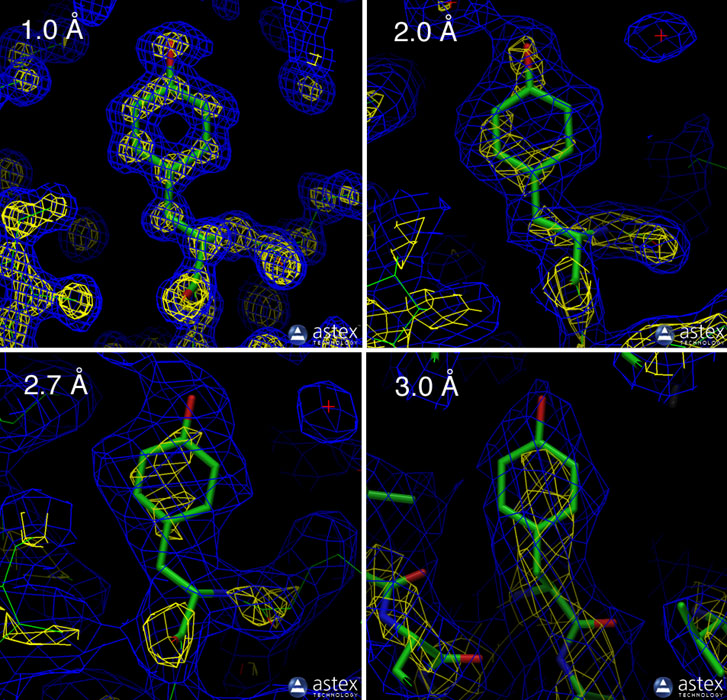
5.1.3 R-value (x-ray only)
R-value is the measure of the quality of the atomic model obtained from the crystallographic data. When solving the structure of a protein, the researcher first builds an atomic model and then calculates a simulated diffraction pattern based on that model.
The R-value measures how well the simulated diffraction pattern matches the experimentally-observed diffraction pattern.
- A totally random set of atoms will give an R-value of about 0.63,
- a perfect fit would have a value of 0.
- Typical values are about 0.15-0.20.
5.1.4 R-free (x-ray only)
There is one potential problem with using R-values to assess the quality of a structure. The refinement process is often used to improve the atomic model of a given structure to make it fit better to the experimental data and improve the R-value. Unfortunately, this introduces bias into the process, since the atomic model is used along with the diffraction pattern to calculate the electron density.
The use of the R-free value is a less biased way to look at this. Before refinement begins, about 10% of the experimental observations are removed from the data set. Then, refinement is performed using the remaining 90%. The R-free value is then calculated by seeing how well the model predicts the 10% that were not used in refinement.
5.1.5 RSRz (x-ray only) :
The real-space R-value (RSR) is a measure of the quality of fit between a part of an atomic model (in this case, one residue) and the data in real space (Jones et al., 1991). The RSR Z-score (RSRZ) is a normalisation of RSR specific to a residue type and a resolution bin (Kleywegt et al., 2004). RSRZ is calculated only for standard amino acids and nucleotides in protein, DNA and RNA chains.
5.1.6 Ramachandran Outliers (all methods)
A residue is considered to be a Ramachandran plot outlier if the combination of its φ and ψ torsion angles is unusual, as assessed by MolProbity (Chen et al., 2010). The Ramachandran outlier score for an entry is calculated as the percentage of Ramachandran outliers with respect to the total number of residues in the entry for which the outlier assessment is available.
- Clashscore (all methods): Atoms bumping into each other score
- Sidechain Outlier (all methods): Protein sidechains mostly adopt certain (combinations of) preferred torsion angle values (called rotamers or rotameric conformers), much like their backbone torsion angles (as assessed in the Ramachandran analysis). MolProbity considers the sidechain conformation of a residue to be an outlier if its set of torsion angles is not similar to any preferred combination. The sidechain outlier score is calculated as the percentage of residues with an unusual sidechain conformation with respect to the total number of residues for which the assessment is available.
5.1.7 Percentile Slider
The metrics shown in the “slider” graphic (see examples below) compare several important global quality indicators for this structure with those of previously deposited PDB entries. The comparison is carried out by calculation of the percentile rank, i.e. the percentage of entries that are equal or poorer than this structure in terms of a quality indicator. The global percentile ranks (black vertical boxes) are calculated with respect to all X-ray structures available in the PDB archive
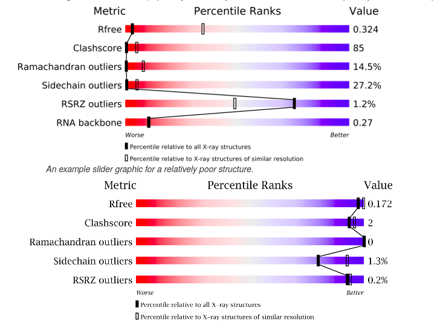
Chain quality details graph
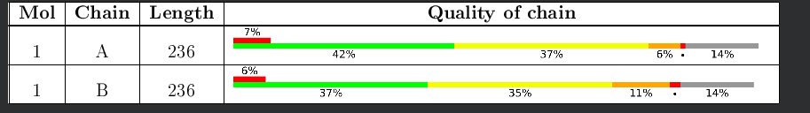
There may be green, yellow, orange and red portions in the lower bar for each chain, indicating the fraction of residues that contain outliers for 0, 1, 2, ≥3 model-only validation criteria, respectively. A grey segment indicates residues present in the sample but not modelled in the final structure. If electron density outliers were present, there is an additional red bar above the lower bar, indicating the fraction of residues that are RSRZ outliers.
NMR validation
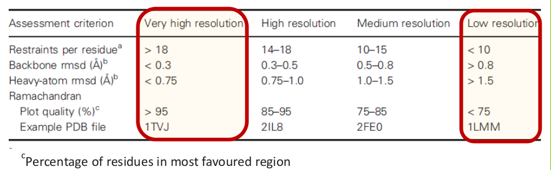
Crio-electron microscopy
From Neumann et al. 2018 : Recent advances in instrumentation and image-processing software
have resulted in a resolution revolution in cryo-electron microscopy …. However despite
technical progress and hundreds of structures determined so far, development of standards
assessing the agreement between the cryo-em map and the respective model as fallen behind.
5.2 PDB File Format
The Protein Data Bank (pdb) file format is a textual file format describing the three-dimensional structures of molecules held in the Protein Data Bank. The pdb format accordingly provides for description and annotation of protein and nucleic acid structures including atomic coordinates, secondary structure assignments, as well as atomic connectivity. In addition experimental metadata are stored.
- HEADER, TITLE and AUTHOR records provide information about the researchers who defined the structure; numerous other types of records are available to provide other types of information.
- REMARK records can contain free-form annotation, but they also accommodate standardized information; for example, the REMARK 350 BIOMT records describe how to compute the coordinates of the experimentally observed multimer from those of the explicitly specified ones of a single repeating unit.
- SEQRES records give the sequences of the three peptide chains (named A, B and C), which are very short in this example but usually span multiple lines.
- ATOM records describe the coordinates of the atoms that are part of the
protein.
- Atom serial number
- Atom name
- Residue name
- Chain identifier
- Residue sequence number
- the first three floating point numbers are its x, y and z coordinates and are in units of Ångströms.
- The next three columns are the occupancy, temperature factor, and the element name, respectively.
- HETATM records describe coordinates of hetero-atoms, that is those atoms which are not part of the protein molecule.
#+CAPTION : Example PDB file
HEADER EXTRACELLULAR MATRIX 22-JAN-98 1A3I TITLE X-RAY CRYSTALLOGRAPHIC DETERMINATION OF A COLLAGEN-LIKE TITLE 2 PEPTIDE WITH THE REPEATING SEQUENCE (PRO-PRO-GLY) ... EXPDTA X-RAY DIFFRACTION AUTHOR R.Z.KRAMER,L.VITAGLIANO,J.BELLA,R.BERISIO,L.MAZZARELLA, AUTHOR 2 B.BRODSKY,A.ZAGARI,H.M.BERMAN ... REMARK 350 BIOMOLECULE: 1 REMARK 350 APPLY THE FOLLOWING TO CHAINS: A, B, C REMARK 350 BIOMT1 1 1.000000 0.000000 0.000000 0.00000 REMARK 350 BIOMT2 1 0.000000 1.000000 0.000000 0.00000 ... SEQRES 1 A 9 PRO PRO GLY PRO PRO GLY PRO PRO GLY SEQRES 1 B 6 PRO PRO GLY PRO PRO GLY SEQRES 1 C 6 PRO PRO GLY PRO PRO GLY ... ATOM 1 N PRO A 1 8.316 21.206 21.530 1.00 17.44 N ATOM 2 CA PRO A 1 7.608 20.729 20.336 1.00 17.44 C ATOM 3 C PRO A 1 8.487 20.707 19.092 1.00 17.44 C ATOM 4 O PRO A 1 9.466 21.457 19.005 1.00 17.44 O ATOM 5 CB PRO A 1 6.460 21.723 20.211 1.00 22.26 C ... HETATM 130 C ACY 401 3.682 22.541 11.236 1.00 21.19 C HETATM 131 O ACY 401 2.807 23.097 10.553 1.00 21.19 O HETATM 132 OXT ACY 401 4.306 23.101 12.291 1.00 21.19 O ...
6 NCBI
NCBI: the National Center for Biotechnology Information , created in 1988 as part of National Library of Medicine (NLM) at the National Institute of Health(NIH)
The NCBI houses a series of databases relevant to biotechnology and biomedicine and is an important resource for bioinformatics tools and services.
- GenBank for Dna sequences
- PubMed for biomedical literature
- BLAST BLAST is an algorithm used for calculating sequence similarity between biological sequences such as nucleotide sequences of DNA and amino acid sequences of proteins.
- CDD : Conserved Domains Database includes domains curated at NCBI and data
imported from external sources (PFAM, SMART, COGs, TIGRFAM)
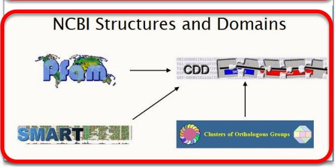
6.1 GenBank
The GenBank sequence database is an open access, annotated collection of all publicly available nucleotide sequences and their protein translations
Submission
- Only original sequences can be submitted to GenBank. Direct submissions are made to GenBank via a Web-based form, or the stand-alone submission program, Sequin.
- Upon receipt of a sequence submission, the GenBank staff examines the originality of the data and assigns an accession number to the sequence and performs quality assurance checks.
- The submissions are then released to the public database, where the entries are retrievable by Entrez or downloadable by FTP.
6.1.1 GenBank Record Sample
Structure
- Header
- Features
- Sequence
Most important fields:
- Accession code (eg. U49845): Stable, Reportable and Universal identifier
- Version : tracks changes in sequence
- CDS (Coding Sequence Region) : region of nucleotides that corresponds with the sequence of amino acids in a protein (includes start and stop codons). This field include also the respective translation protein. Annotation on the quality of the CDS can be present.(experimental/not experimental)
LOCUS SCU49845 5028 bp DNA PLN 21-JUN-1999
DEFINITION Saccharomyces cerevisiae TCP1-beta gene, partial cds, and Axl2p
(AXL2) and Rev7p (REV7) genes, complete cds.
ACCESSION U49845
VERSION U49845.1 GI:1293613
KEYWORDS .
SOURCE Saccharomyces cerevisiae (baker's yeast)
ORGANISM Saccharomyces cerevisiae
Eukaryota; Fungi; Ascomycota; Saccharomycotina; Saccharomycetes;
Saccharomycetales; Saccharomycetaceae; Saccharomyces.
REFERENCE 1 (bases 1 to 5028)
AUTHORS Torpey,L.E., Gibbs,P.E., Nelson,J. and Lawrence,C.W.
TITLE Cloning and sequence of REV7, a gene whose function is required for
DNA damage-induced mutagenesis in Saccharomyces cerevisiae
JOURNAL Yeast 10 (11), 1503-1509 (1994)
PUBMED 7871890
REFERENCE 2 (bases 1 to 5028)
AUTHORS Roemer,T., Madden,K., Chang,J. and Snyder,M.
TITLE Selection of axial growth sites in yeast requires Axl2p, a novel
plasma membrane glycoprotein
JOURNAL Genes Dev. 10 (7), 777-793 (1996)
PUBMED 8846915
REFERENCE 3 (bases 1 to 5028)
AUTHORS Roemer,T.
TITLE Direct Submission
JOURNAL Submitted (22-FEB-1996) Terry Roemer, Biology, Yale University, New
Haven, CT, USA
FEATURES Location/Qualifiers
source 1..5028
/organism="Saccharomyces cerevisiae"
/db_xref="taxon:4932"
/chromosome="IX"
/map="9"
CDS <1..206
/codon_start=3
/product="TCP1-beta"
/protein_id="AAA98665.1"
/db_xref="GI:1293614"
/translation="SSIYNGISTSGLDLNNGTIADMRQLGIVESYKLKRAVVSSASEA
AEVLLRVDNIIRARPRTANRQHM"
gene 687..3158
/gene="AXL2"
CDS 687..3158
/gene="AXL2"
/note="plasma membrane glycoprotein"
/codon_start=1
/function="required for axial budding pattern of S.
cerevisiae"
/product="Axl2p"
/protein_id="AAA98666.1"
/db_xref="GI:1293615"
/translation="MTQLQISLLLTATISLLHLVVATPYEAYPIGKQYPPVARVNESF
TFQISNDTYKSSVDKTAQITYNCFDLPSWLSFDSSSRTFSGEPSSDLLSDANTTLYFN
VILEGTDSADSTSLNNTYQFVVTNRPSISLSSDFNLLALLKNYGYTNGKNALKLDPNE
VFNVTFDRSMFTNEESIVSYYGRSQLYNAPLPNWLFFDSGELKFTGTAPVINSAIAPE
TSYSFVIIATDIEGFSAVEVEFELVIGAHQLTTSIQNSLIINVTDTGNVSYDLPLNYV
YLDDDPISSDKLGSINLLDAPDWVALDNATISGSVPDELLGKNSNPANFSVSIYDTYG
DVIYFNFEVVSTTDLFAISSLPNINATRGEWFSYYFLPSQFTDYVNTNVSLEFTNSSQ
DHDWVKFQSSNLTLAGEVPKNFDKLSLGLKANQGSQSQELYFNIIGMDSKITHSNHSA
NATSTRSSHHSTSTSSYTSSTYTAKISSTSAAATSSAPAALPAANKTSSHNKKAVAIA
CGVAIPLGVILVALICFLIFWRRRRENPDDENLPHAISGPDLNNPANKPNQENATPLN
NPFDDDASSYDDTSIARRLAALNTLKLDNHSATESDISSVDEKRDSLSGMNTYNDQFQ
SQSKEELLAKPPVQPPESPFFDPQNRSSSVYMDSEPAVNKSWRYTGNLSPVSDIVRDS
YGSQKTVDTEKLFDLEAPEKEKRTSRDVTMSSLDPWNSNISPSPVRKSVTPSPYNVTK
HRNRHLQNIQDSQSGKNGITPTTMSTSSSDDFVPVKDGENFCWVHSMEPDRRPSKKRL
VDFSNKSNVNVGQVKDIHGRIPEML"
gene complement(3300..4037)
/gene="REV7"
CDS complement(3300..4037)
/gene="REV7"
/codon_start=1
/product="Rev7p"
/protein_id="AAA98667.1"
/db_xref="GI:1293616"
/translation="MNRWVEKWLRVYLKCYINLILFYRNVYPPQSFDYTTYQSFNLPQ
FVPINRHPALIDYIEELILDVLSKLTHVYRFSICIINKKNDLCIEKYVLDFSELQHVD
KDDQIITETEVFDEFRSSLNSLIMHLEKLPKVNDDTITFEAVINAIELELGHKLDRNR
RVDSLEEKAEIERDSNWVKCQEDENLPDNNGFQPPKIKLTSLVGSDVGPLIIHQFSEK
LISGDDKILNGVYSQYEEGESIFGSLF"
ORIGIN
1 gatcctccat atacaacggt atctccacct caggtttaga tctcaacaac ggaaccattg
61 ccgacatgag acagttaggt atcgtcgaga gttacaagct aaaacgagca gtagtcagct
121 ctgcatctga agccgctgaa gttctactaa gggtggataa catcatccgt gcaagaccaa
181 gaaccgccaa tagacaacat atgtaacata tttaggatat acctcgaaaa taataaaccg
241 ccacactgtc attattataa ttagaaacag aacgcaaaaa ttatccacta tataattcaa
301 agacgcgaaa aaaaaagaac aacgcgtcat agaacttttg gcaattcgcg tcacaaataa
361 attttggcaa cttatgtttc ctcttcgagc agtactcgag ccctgtctca agaatgtaat
421 aatacccatc gtaggtatgg ttaaagatag catctccaca acctcaaagc tccttgccga
481 gagtcgccct cctttgtcga gtaattttca cttttcatat gagaacttat tttcttattc
541 tttactctca catcctgtag tgattgacac tgcaacagcc accatcacta gaagaacaga
601 acaattactt aatagaaaaa ttatatcttc ctcgaaacga tttcctgctt ccaacatcta
661 cgtatatcaa gaagcattca cttaccatga cacagcttca gatttcatta ttgctgacag
721 ctactatatc actactccat ctagtagtgg ccacgcccta tgaggcatat cctatcggaa
781 aacaataccc cccagtggca agagtcaatg aatcgtttac atttcaaatt tccaatgata
841 cctataaatc gtctgtagac aagacagctc aaataacata caattgcttc gacttaccga
901 gctggctttc gtttgactct agttctagaa cgttctcagg tgaaccttct tctgacttac
961 tatctgatgc gaacaccacg ttgtatttca atgtaatact cgagggtacg gactctgccg
1021 acagcacgtc tttgaacaat acataccaat ttgttgttac aaaccgtcca tccatctcgc
1081 tatcgtcaga tttcaatcta ttggcgttgt taaaaaacta tggttatact aacggcaaaa
1141 acgctctgaa actagatcct aatgaagtct tcaacgtgac ttttgaccgt tcaatgttca
1201 ctaacgaaga atccattgtg tcgtattacg gacgttctca gttgtataat gcgccgttac
1261 ccaattggct gttcttcgat tctggcgagt tgaagtttac tgggacggca ccggtgataa
1321 actcggcgat tgctccagaa acaagctaca gttttgtcat catcgctaca gacattgaag
1381 gattttctgc cgttgaggta gaattcgaat tagtcatcgg ggctcaccag ttaactacct
1441 ctattcaaaa tagtttgata atcaacgtta ctgacacagg taacgtttca tatgacttac
1501 ctctaaacta tgtttatctc gatgacgatc ctatttcttc tgataaattg ggttctataa
1561 acttattgga tgctccagac tgggtggcat tagataatgc taccatttcc gggtctgtcc
1621 cagatgaatt actcggtaag aactccaatc ctgccaattt ttctgtgtcc atttatgata
1681 cttatggtga tgtgatttat ttcaacttcg aagttgtctc cacaacggat ttgtttgcca
1741 ttagttctct tcccaatatt aacgctacaa ggggtgaatg gttctcctac tattttttgc
1801 cttctcagtt tacagactac gtgaatacaa acgtttcatt agagtttact aattcaagcc
1861 aagaccatga ctgggtgaaa ttccaatcat ctaatttaac attagctgga gaagtgccca
1921 agaatttcga caagctttca ttaggtttga aagcgaacca aggttcacaa tctcaagagc
1981 tatattttaa catcattggc atggattcaa agataactca ctcaaaccac agtgcgaatg
2041 caacgtccac aagaagttct caccactcca cctcaacaag ttcttacaca tcttctactt
2101 acactgcaaa aatttcttct acctccgctg ctgctacttc ttctgctcca gcagcgctgc
2161 cagcagccaa taaaacttca tctcacaata aaaaagcagt agcaattgcg tgcggtgttg
2221 ctatcccatt aggcgttatc ctagtagctc tcatttgctt cctaatattc tggagacgca
2281 gaagggaaaa tccagacgat gaaaacttac cgcatgctat tagtggacct gatttgaata
2341 atcctgcaaa taaaccaaat caagaaaacg ctacaccttt gaacaacccc tttgatgatg
2401 atgcttcctc gtacgatgat acttcaatag caagaagatt ggctgctttg aacactttga
2461 aattggataa ccactctgcc actgaatctg atatttccag cgtggatgaa aagagagatt
2521 ctctatcagg tatgaataca tacaatgatc agttccaatc ccaaagtaaa gaagaattat
2581 tagcaaaacc cccagtacag cctccagaga gcccgttctt tgacccacag aataggtctt
2641 cttctgtgta tatggatagt gaaccagcag taaataaatc ctggcgatat actggcaacc
2701 tgtcaccagt ctctgatatt gtcagagaca gttacggatc acaaaaaact gttgatacag
2761 aaaaactttt cgatttagaa gcaccagaga aggaaaaacg tacgtcaagg gatgtcacta
2821 tgtcttcact ggacccttgg aacagcaata ttagcccttc tcccgtaaga aaatcagtaa
2881 caccatcacc atataacgta acgaagcatc gtaaccgcca cttacaaaat attcaagact
2941 ctcaaagcgg taaaaacgga atcactccca caacaatgtc aacttcatct tctgacgatt
3001 ttgttccggt taaagatggt gaaaattttt gctgggtcca tagcatggaa ccagacagaa
3061 gaccaagtaa gaaaaggtta gtagattttt caaataagag taatgtcaat gttggtcaag
3121 ttaaggacat tcacggacgc atcccagaaa tgctgtgatt atacgcaacg atattttgct
3181 taattttatt ttcctgtttt attttttatt agtggtttac agatacccta tattttattt
3241 agtttttata cttagagaca tttaatttta attccattct tcaaatttca tttttgcact
3301 taaaacaaag atccaaaaat gctctcgccc tcttcatatt gagaatacac tccattcaaa
3361 attttgtcgt caccgctgat taatttttca ctaaactgat gaataatcaa aggccccacg
3421 tcagaaccga ctaaagaagt gagttttatt ttaggaggtt gaaaaccatt attgtctggt
3481 aaattttcat cttcttgaca tttaacccag tttgaatccc tttcaatttc tgctttttcc
3541 tccaaactat cgaccctcct gtttctgtcc aacttatgtc ctagttccaa ttcgatcgca
3601 ttaataactg cttcaaatgt tattgtgtca tcgttgactt taggtaattt ctccaaatgc
3661 ataatcaaac tatttaagga agatcggaat tcgtcgaaca cttcagtttc cgtaatgatc
3721 tgatcgtctt tatccacatg ttgtaattca ctaaaatcta aaacgtattt ttcaatgcat
3781 aaatcgttct ttttattaat aatgcagatg gaaaatctgt aaacgtgcgt taatttagaa
3841 agaacatcca gtataagttc ttctatatag tcaattaaag caggatgcct attaatggga
3901 acgaactgcg gcaagttgaa tgactggtaa gtagtgtagt cgaatgactg aggtgggtat
3961 acatttctat aaaataaaat caaattaatg tagcatttta agtataccct cagccacttc
4021 tctacccatc tattcataaa gctgacgcaa cgattactat tttttttttc ttcttggatc
4081 tcagtcgtcg caaaaacgta taccttcttt ttccgacctt ttttttagct ttctggaaaa
4141 gtttatatta gttaaacagg gtctagtctt agtgtgaaag ctagtggttt cgattgactg
4201 atattaagaa agtggaaatt aaattagtag tgtagacgta tatgcatatg tatttctcgc
4261 ctgtttatgt ttctacgtac ttttgattta tagcaagggg aaaagaaata catactattt
4321 tttggtaaag gtgaaagcat aatgtaaaag ctagaataaa atggacgaaa taaagagagg
4381 cttagttcat cttttttcca aaaagcaccc aatgataata actaaaatga aaaggatttg
4441 ccatctgtca gcaacatcag ttgtgtgagc aataataaaa tcatcacctc cgttgccttt
4501 agcgcgtttg tcgtttgtat cttccgtaat tttagtctta tcaatgggaa tcataaattt
4561 tccaatgaat tagcaatttc gtccaattct ttttgagctt cttcatattt gctttggaat
4621 tcttcgcact tcttttccca ttcatctctt tcttcttcca aagcaacgat ccttctaccc
4681 atttgctcag agttcaaatc ggcctctttc agtttatcca ttgcttcctt cagtttggct
4741 tcactgtctt ctagctgttg ttctagatcc tggtttttct tggtgtagtt ctcattatta
4801 gatctcaagt tattggagtc ttcagccaat tgctttgtat cagacaattg actctctaac
4861 ttctccactt cactgtcgag ttgctcgttt ttagcggaca aagatttaat ctcgttttct
4921 ttttcagtgt tagattgctc taattctttg agctgttctc tcagctcctc atatttttct
4981 tgccatgact cagattctaa ttttaagcta ttcaatttct ctttgatc
//
6.1.2 Search field restrictions
We can add the following field restrictions keywords when we search in GenBank
- [Title] : Definition line glyceraldehyde 3 phosphate dehydrogenase[Title]
- [Organism] : NCBI’s taxonomy mouse[organism]; green plants[organism];
- [Properties]: molecule type, location, database source biomolmrna[properties]; biomolgenomic[properties]; geneinmitochondrion[properties]; srcdb pdb[properties]
- [Filter]: subsets of data, Entrez links all[filter]; nucleotide mapview[filter]; nucleotide omim[filter]
6.1.3 Division organization
Records are divided into two types of divisions
12 Traditional Divisions
- PRI Primate
- PLN Plant and Fungal
- BCT Bacterial and Archeal
- INV Invertebrate
- ROD Rodent
- VRL Viral
- VRT Other Vertebrate
- MAM Mammalian
- PHG Phage
- SYN Synthetic (cloning vectors)
- ENV Environmental Samples
- UNA Unannotated
Features :
- Direct Submissions
- Accurate
- Well characterized
BULK Divisions
- EST Expressed Sequence Tag
- GSS Genome Survey Sequence
- HTG High Throughput Genomic
- STS Sequence Tagged Site
- HTC High Throughput cDNA
- PAT Patent
Features:
- Batch Submission
- Inaccurate
- Poorly characterized
6.2 RefSeq
The Reference Sequence (RefSeq) database is an open access, annotated and curated collection of publicly available nucleotide sequences (DNA, RNA) and their protein products. This database is built by National Center for Biotechnology Information (NCBI), and, unlike GenBank, provides only a single record for each natural biological molecule (i.e. DNA, RNA or protein) for major organisms ranging from viruses to bacteria to eukaryotes.
For each model organism, RefSeq aims to provide separate and linked records for the genomic DNA, the gene transcripts, and the proteins arising from those transcripts. RefSeq is limited to major organisms for which sufficient data are available (more than 66,000 distinct “named” organisms as of September 2011), while GenBank includes sequences for any organism submitted
6.2.1 Difference RefSeq vs GenBank
| Genbank | RefSeq |
|---|---|
| Not Curated | Curated |
| Author submits | NCBI creates from genbank data |
| Multiple Records for same loci | Single records for each molecule of major organisms |
| No limit of species | Limited number of organisms |
| Akin to primary literature | Akin to review articles |
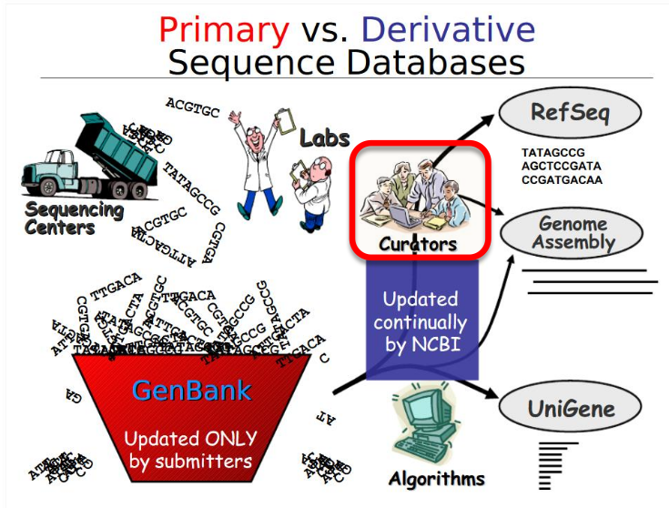
6.2.2 RefSeq Categories
| Category | Description |
|---|---|
| NC | Complete genomic molecules |
| NG | Incomplete genomic region |
| NM | mRNA |
| NR | ncRNA |
| NP | Protein |
| XM | predicted mRNA model |
| XR | predicted ncRNA model |
| XP | predicted Protein model (eukaryotic sequences) |
| WP | predicted Protein model (prokaryotic sequences) |
6.2.3 RefSeq Status
- Model : No individual review
- Inferred : Predicted by genome sequence analysis
- Predicted : No individual review, some aspect predicted
- Reviewed : Reviewed by NCBI staff
- Validated : No final review, initial review performed
6.3 Gene
Gene supplies gene-specific connections in the nexus of map, sequence, expression, structure, function, citation, and homology data.
Unique identifiers are assigned to genes with defining sequences, genes with known map positions, and genes inferred from phenotypic information. These gene identifiers are used throughout NCBI’s databases and tracked through updates of annotation.
6.3.1 NCBI Record
A NCBI Gene record may include:
- nomenclature,
- Reference Sequences (RefSeqs),
- maps,
- pathways,
- variations,
- phenotypes,
- links to genome-, phenotype-, and locus-specific resources worldwide
6.3.2 NCBI Gene Query
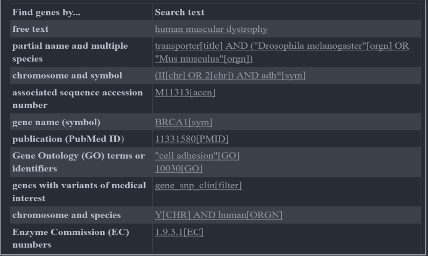
6.4 OMIM (Online Mendelian Inheritance in Man)
The full-text overviews in OMIM contain information on all known mendelian disorders and over 16,000 genes. It is updated daily.
- OMIM focuses on the relationship between phenotype and genotype.
- This database was initiated in the early 1960s by Dr. Victor A. McKusick as a catalog of mendelian traits and disorders (Mendelian Inheritance in Man – MIM). The online version, OMIM, was created in 1985 by a collaboration between the NLM and the Johns Hopkins University.
6.5 dbSNP
The database contains actually a range of molecular variations:
- SNPs
- short deletion and insertion polymorphisms (indels/DIPs)
- microsatellite markers or Short Tandem Repeats (STRs)
- multinucleotide polymorphisms (MNPs)
Dataflow
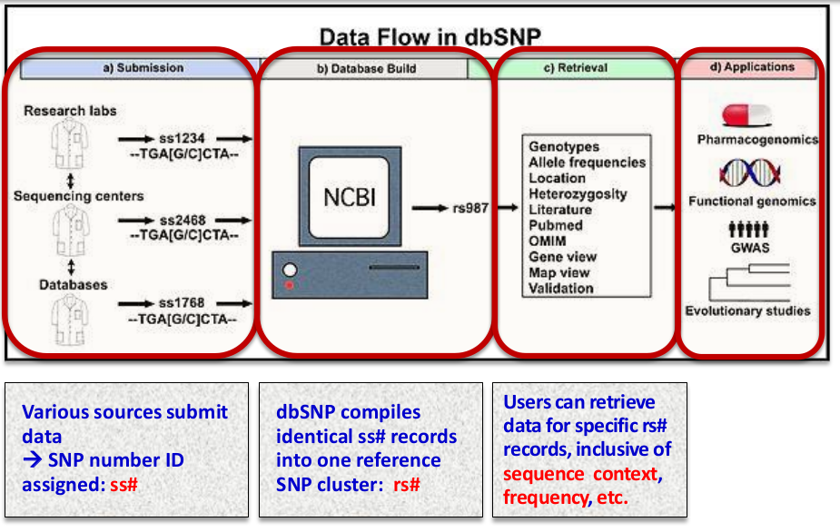
6.5.1 GWAS
Sequence variations might be responsible for individual phenotypic characteristics, including a person’s propensity toward complex disorders such as heart disease and cancer.
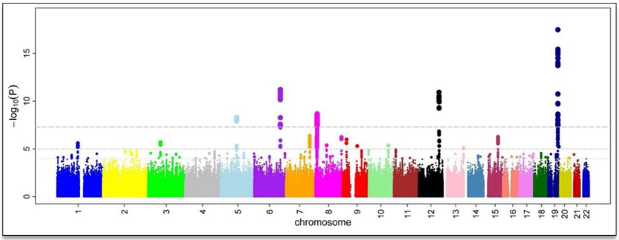
A Manhattan plot depicting several strongly associated risk loci. Each dot represents a SNP, X-axis: genomic location, Y-axis: association level.
A GWA study investigating microcirculation, the tops indicates genetic variants that more often are found in individuals with constrictions in small blood vessels.
6.6 Nucleotide
The Nucleotide database is a collection of sequences from several sources, including GenBank, RefSeq, TPA and PDB. Genome, gene and transcript sequence data provide the foundation for biomedical research and discovery.
6.7 Exercises
6.7.1 Exercise 1
- Question
In NCBI “Nucleotide”, find all entries
containing: mRNA sequences
coding for: chymotrypsin and trypsin (use the field: “Protein name”)
from: all organisms except Plant, Fungal, and Viral
which have been: reviewed or validated in RefSeq.
(Notice that in NCBI searches the boolean have to be uppercase :
“AND”, “OR” , “NOT”)
How many entries have you found ?
- Answer
"biomol mrna"[Properties] AND ("trypsin"[Protein Name] OR "chymotrypsin"[Protein Name]) NOT ("gbdiv pln"[Properties] OR "gbdiv vrl"[Properties]) AND ("srcdb refseq reviewed"[Properties] OR "srcdb refseq validated"[Properties])
6.7.2 Exercise 2
- Question
In the Gene database, look for the gene coding for the NP073728 protein.- Which is its cytogenetic location ?
- In which biological process is the protein involved, according to the GO classification, TAS code ?
- What is the RefSeq Accession Number of the mRNA molecule coding for it? Is it a reviewed entry?
- Answer
- Location: 2q37.3
- circadian rhythm GO:0007623
- NM022817.3 Reviewed
6.7.3 Exercise 3
- Question
- How many genes in the «Gene» database have as source the species Homo sapiens ?
- How many of them are «protein coding» ?
- How many are «pseudo-genes» ?
- How many are «non-coding RNA» ?
- Answer
- 61745 - “human”[Organism]
- 19786 - (“human”[Organism]) AND “genetype protein coding”[Properties]
- 16552 - (“human”[Organism]) AND “genetype pseudo”[Properties]
- 17455 - (“genetype ncrna”[Properties]) AND “human”[Organism]
7 Experimental Methods
7.1 X-ray Crystallography
X-ray crystallography (XRC) is the experimental science determining the atomic and molecular structure of a crystal, in which the crystalline structure causes a beam of incident X-rays to diffract into many specific directions. By measuring the angles and intensities of these diffracted beams, a crystallographer can produce a three-dimensional picture of the density of electrons within the crystal. From this electron density, the mean positions of the atoms in the crystal can be determined, as well as their chemical bonds, their crystallographic disorder, and various other information.
#+Xray Cristallography to structure scheme
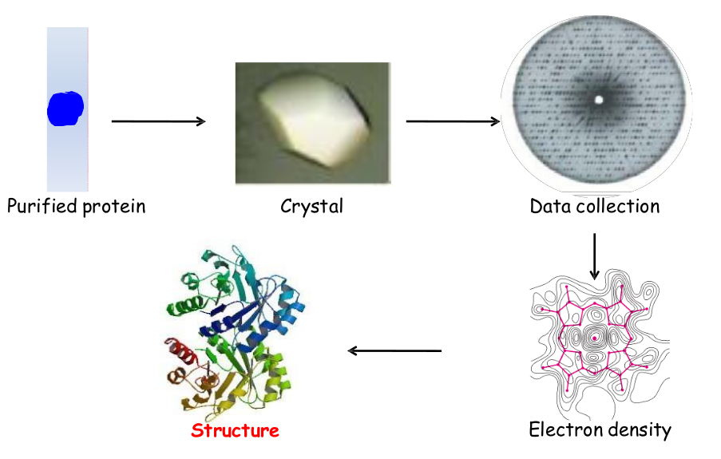
- Crystals Formation : A crystal is a three-dimensional regular structure formed by many
identical molecules. Proteins are large objects with irregular shapes and it is impossible
to pack them into a crystal without forming large holes or channels between the individual
molecules.
The formation of a crystal strongly depends on a number of different parameters, such as pH, temperature, protein concentration. Well ordered protein crystals diffract X-rays.
The atoms in a crystal are not static, but oscillate about their mean positions, usually by less than a few tenths of an angstrom. X-ray crystallography allows measuring the size of these oscillations.
Due to the ordered molecular packing, the crystal behaves as a very powerful amplifier
- Why X-rays : In order to measure something accurately you need the appropriate ruler. The X-rays wavelength[10 Å and 0.01 Å] has the same order of magnitude of a covalent bond. The type of X-rays used by crystallographers are ~ 0.5 to 1.5 Å long.
7.2 NMR Spectroscopy
Nuclear magnetic resonance spectroscopy, most commonly known as NMR spectroscopy or magnetic resonance spectroscopy (MRS), is a spectroscopic technique to observe local magnetic fields around atomic nuclei.
- The sample is placed in a magnetic field and the NMR signal is produced by excitation of the nuclei sample with radio waves into nuclear magnetic resonance, which is detected with sensitive radio receivers.
- The intramolecular magnetic field around an atom in a molecule changes the resonance frequency, thus giving access to details of the electronic structure of a molecule and its individual functional groups.
- A distinctive set of observed resonances may be analyzed to give a list of atomic nuclei that are close to one another, and to characterize the local conformation of atoms that are bonded together. This list of restraints is then used to build models of the protein that shows the location of each atom. The technique is currently limited to small or medium proteins, since large proteins present problems with overlapping peaks in the NMR spectra.
Variation among models
- can represent actual flexibility and thermal motion
- can mean uncertainty in the atomic positions
To distinguish between the two, specific NMR experiments can be used to measure the dynamics of individual atoms.
7.2.1 Pros and Cons
Difficulties
- protein in solution: protein has to be soluble
- insensitive method: requires high concentrations of proteins
- direct determination of 3D structures for small proteins only (up to 50-60 kD)
Advantages
- protein in solution: no crystal packing artefacts, allows direct
binding experiments, hydrodynamic and folding studies
- assignment of mobile regions (loops) possible: no gaps in
structure
7.3 Cry-electron microscopy
Electron microscopy, frequently referred to as 3DEM, is also used to determine 3D structures of large macromolecular assemblies. A beam of electrons and a system of electron lenses is used to image the biomolecule directly. Several tricks are required to obtain a 3D structure from 2D projection images produced by transmission electron microscopes. The most commonly used technique today involves imaging of many thousands of different single particles preserved in a thin layer of non-crystalline ice (cryo-EM). Provided these views show the molecule in myriad different orientations, a computational approach akin to that used for computerized axial tomography or CAT scans in medicine will yield a 3D mass density map. With a sufficient number of single particles, the 3DEM maps can then be interpreted by fitting an atomic model of the macromolecule into the map, just as macromolecular crystallographers interpret their electron density maps.
8 Database
A database is an organized collection of data, generally stored and accessed electronically from a computer system.